點各章標題旁的 ▶ 按鈕可直接跳到影片對應位置。
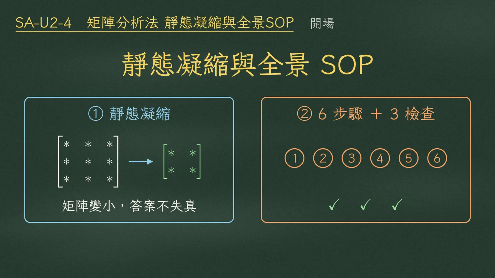
矩陣分析法的最後一個單元：靜態凝縮與全景 SOP。
第一，靜態凝縮：把沒有外力的自由度乾淨地消掉，矩陣變小，答案完全不失真。第二，考場六個標準動作，加上三個獨立檢查。
先建立物理直覺。勁度，是在其他自由度全部鎖死的前提下量出來的。近端轉一個單位角；遠端固接、不准動，就產生傳遞彎矩 \(2EI/L\)，近端要撐住 \(4EI/L\)。
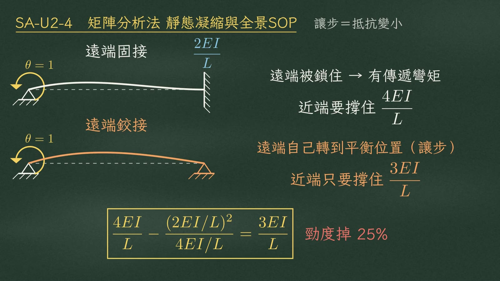
如果遠端是鉸接，遠端會自己轉到平衡位置，這就是讓步，近端只要撐住 \(3EI/L\)：
$$\frac{4EI}{L}-\frac{(2EI/L)^2}{4EI/L}=\frac{3EI}{L}$$抗轉勁度掉了 25%。
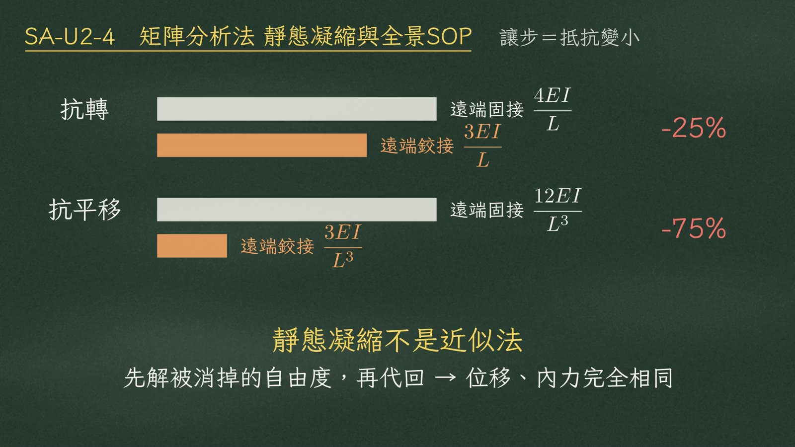
| 勁度 | 遠端固接 | 遠端鉸接 | 降幅 |
|---|---|---|---|
| 抗轉 | \(4EI/L\) | \(3EI/L\) | −25% |
| 抗平移 | \(12EI/L^3\) | \(3EI/L^3\) | −75% |
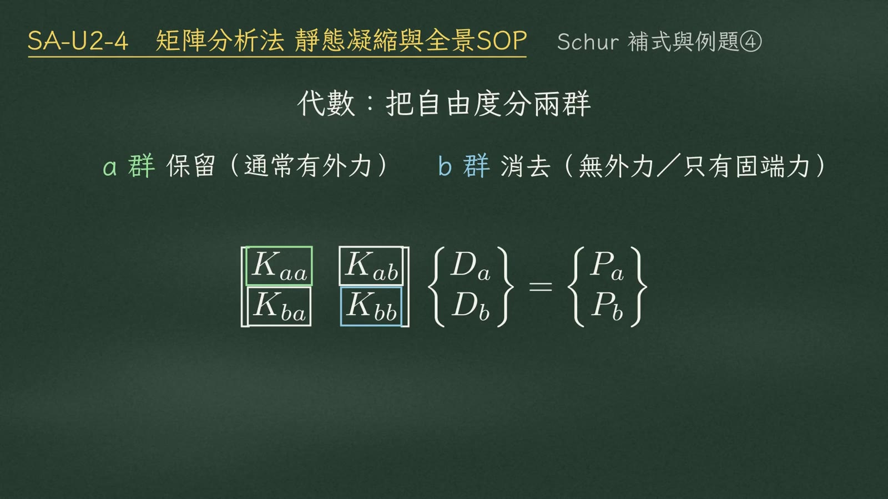
代數上怎麼做？把自由度分成兩群：a 群是想保留的，通常有外力；b 群是想消掉的，上面沒有外力，或只有固端力。把勁度矩陣切成四塊：\(K_{aa}\)、\(K_{ab}\)、\(K_{ba}\)、\(K_{bb}\)。
$$\begin{bmatrix}\color{#3c9a5a}{K_{aa}} & K_{ab}\\ K_{ba} & \color{#3a7fc0}{K_{bb}}\end{bmatrix}\begin{Bmatrix}D_a\\ D_b\end{Bmatrix}=\begin{Bmatrix}P_a\\ P_b\end{Bmatrix}$$第一條，凝縮後的勁度（Schur 補式）：
$$[K^*]=K_{aa}-K_{ab}K_{bb}^{-1}K_{ba}$$減掉的那一項恆為正半定，所以 \(K^*\) 一定小於等於 \(K_{aa}\)：
$$K_{ab}K_{bb}^{-1}K_{ba}\succeq 0\;(\text{正半定})\;\Rightarrow\;K^*\le K_{aa}$$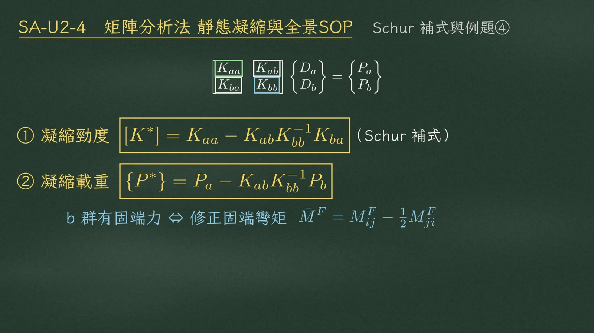
第二條，凝縮後的載重：
$$\{P^*\}=P_a-K_{ab}K_{bb}^{-1}P_b$$b 群有固端力時，載重要跟著改；這一項正好等價於修正固端彎矩：
$$\bar M^F=M^F_{ij}-\tfrac12 M^F_{ji}$$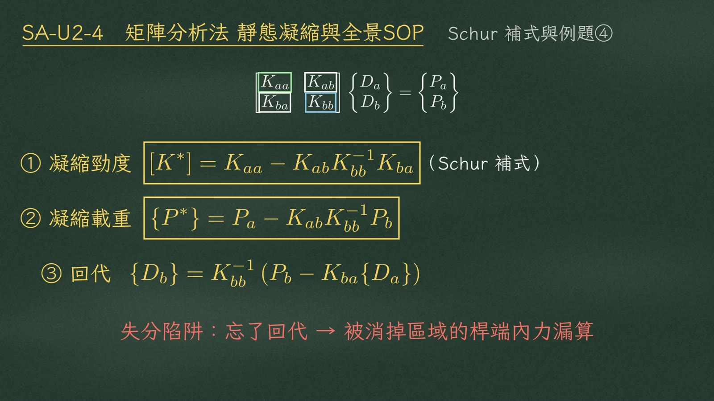
第三條，解出 \(D_a\) 之後，回代求 \(D_b\)：
$$\{D_b\}=K_{bb}^{-1}\left(P_b-K_{ba}\{D_a\}\right)$$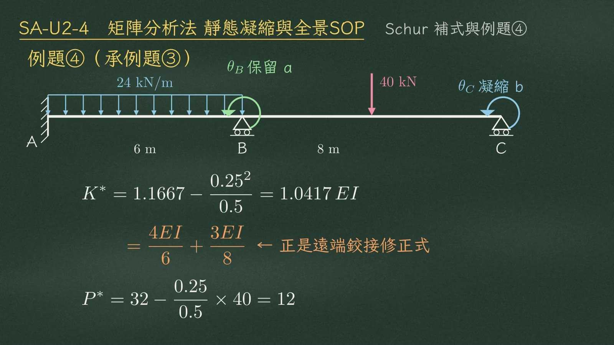
看例題四。兩跨連續梁，A 固定、B 和 C 是滾支承；AB 跨 6 m，每米 24 kN；BC 跨 8 m，中央集中力 40 kN。自由度是 B 點轉角和 C 點轉角；C 點沒有外加彎矩，把它凝縮掉。
$$K^*=1.1667-\frac{0.25^2}{0.5}=1.0417\,EI\;=\;\color{#d9822b}{\frac{4EI}{6}+\frac{3EI}{8}}$$拆開看，就是 \(4EI/6\) 加 \(3EI/8\)，正是遠端鉸接的修正式。載重：
$$P^*=32-\frac{0.25}{0.5}\times 40=12$$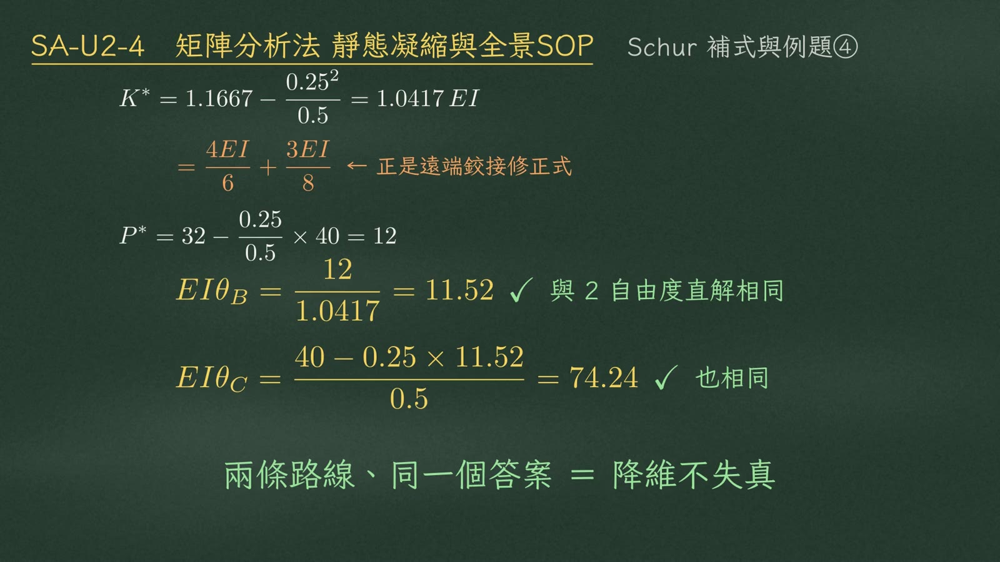
接下來看全景。整個矩陣分析法，就是：
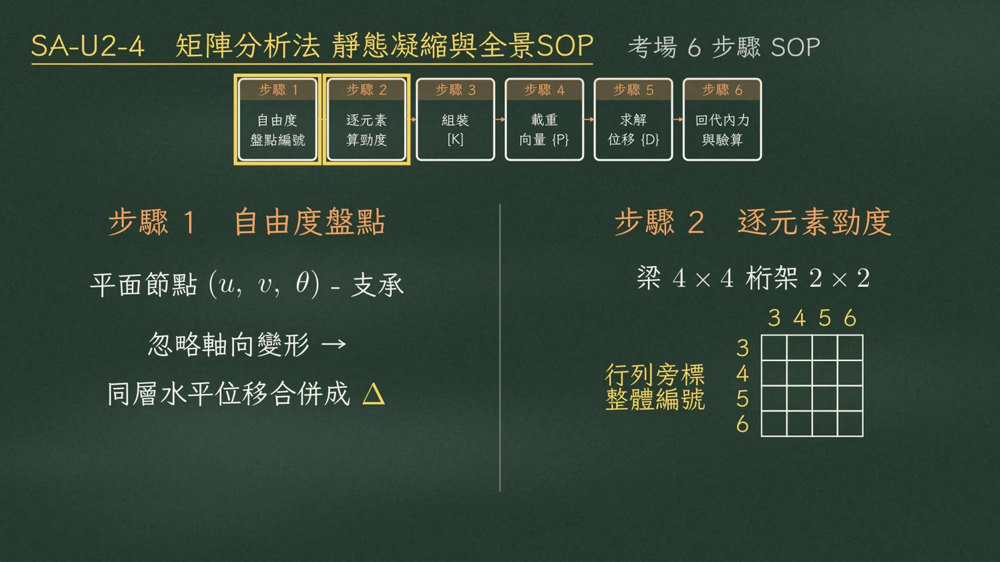
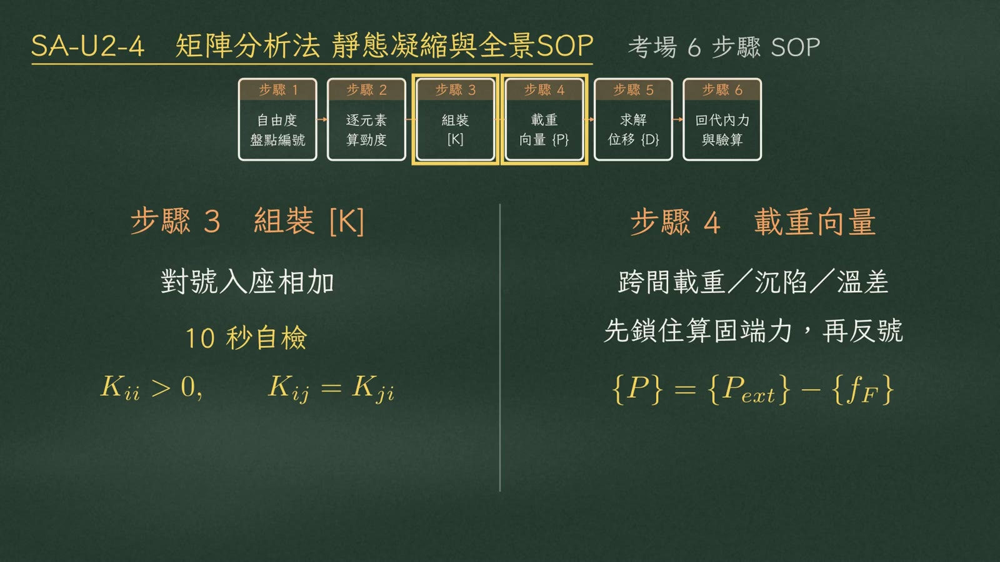
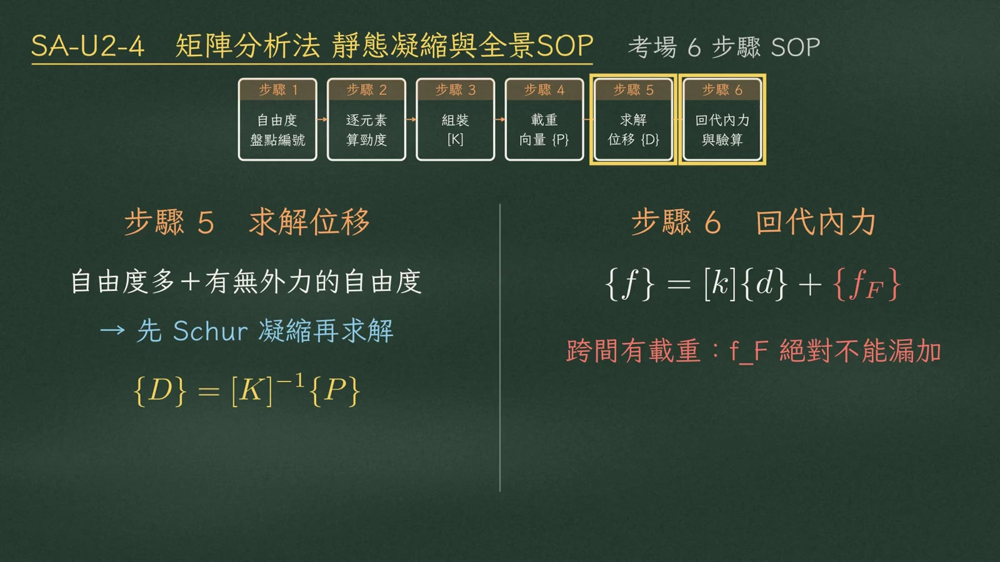
| 步驟 | 內容（旁白） |
|---|---|
| ① 自由度盤點與編號 | 平面節點預設 \(u、v、\theta\) 三個，扣掉支承；忽略軸向變形，就把同一層的水平位移合併成一個側移 \(\Delta\)。 |
| ② 逐元素算勁度 | 梁 4×4、桁架 2×2，行列旁標上整體編號。 |
| ③ 組裝 [K] | 對號入座相加。十秒自檢：對角線恆為正，非對角線對稱——\(K_{ii}>0,\;K_{ij}=K_{ji}\)。 |
| ④ 載重向量 | 跨間載重、沉陷、溫差，先鎖住算固端力，再反號：\(\{P\}=\{P_{ext}\}-\{f_F\}\)。 |
| ⑤ 求解位移 | 自由度多、又有沒外力的自由度，先用 Schur 補式凝縮，再求解：\(\{D\}=[K]^{-1}\{P\}\)。 |
| ⑥ 回代內力 | 真實內力等於 \(k\cdot d\)，再加上 \(f_F\)：\(\{f\}=[k]\{d\}+\{f_F\}\)。 |
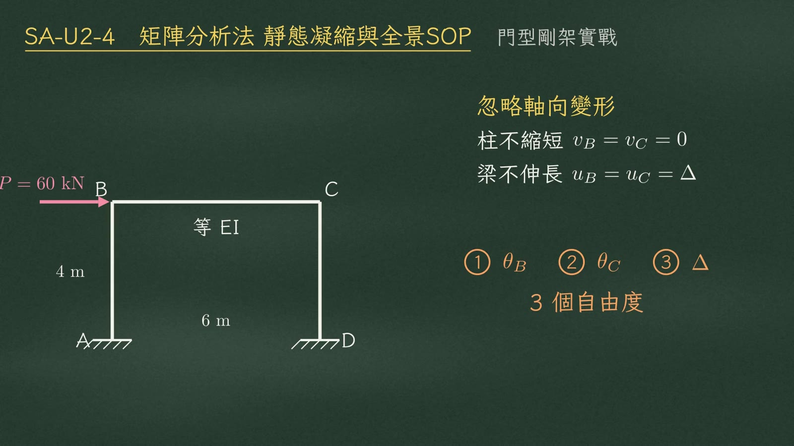
實戰：門型剛架。柱高 4 m、梁長 6 m、兩柱底固定、EI 相同，B 點受水平力 60 kN。忽略軸向變形：柱不縮短 \((v_B=v_C=0)\)、梁不伸長 \((u_B=u_C=\Delta)\)，B、C 兩點水平位移相同。只剩三個自由度：① B 點轉角 \(\theta_B\)、② C 點轉角 \(\theta_C\)、③ 側移 \(\Delta\)。
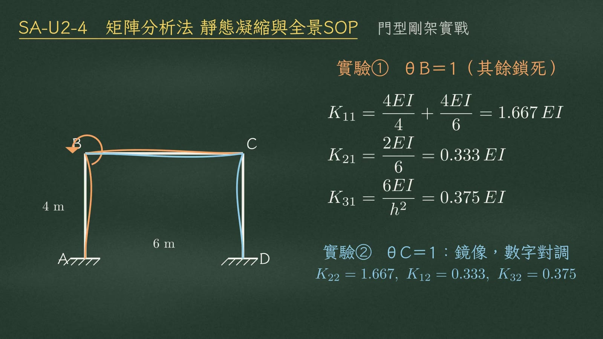
三場單位位移實驗。第一場，B 點轉一個單位、其餘鎖死：
$$\begin{aligned}K_{11}&=\frac{4EI}{4}+\frac{4EI}{6}=1.667\,EI\\ K_{21}&=\frac{2EI}{6}=0.333\,EI\\ K_{31}&=\frac{6EI}{h^2}=0.375\,EI\end{aligned}$$左柱 \(4EI/4\) 加梁 \(4EI/6\)；梁傳到 C 點得 \(K_{21}\)；柱的側向耦合 \(6EI/h^2\)。第二場是鏡像，數字對調：\(K_{22}=1.667,\;K_{12}=0.333,\;K_{32}=0.375\)。
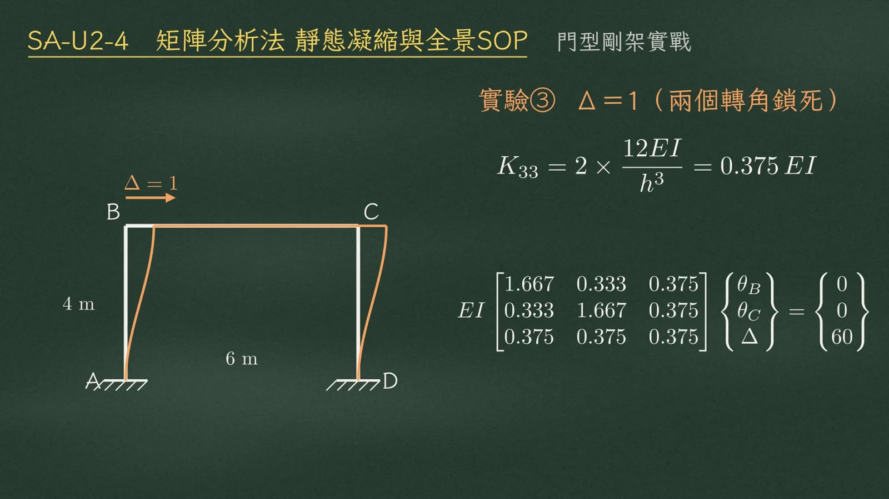
第三場，側移一個單位、兩個轉角鎖死：兩根柱的抗平移勁度相加，
$$K_{33}=2\times\frac{12EI}{h^3}=0.375\,EI$$3×3 矩陣排好，載重向量只有側移那一列有外力：0、0、60。
$$EI\begin{bmatrix}1.667&0.333&0.375\\0.333&1.667&0.375\\0.375&0.375&0.375\end{bmatrix}\begin{Bmatrix}\theta_B\\ \theta_C\\ \Delta\end{Bmatrix}=\begin{Bmatrix}0\\0\\60\end{Bmatrix}$$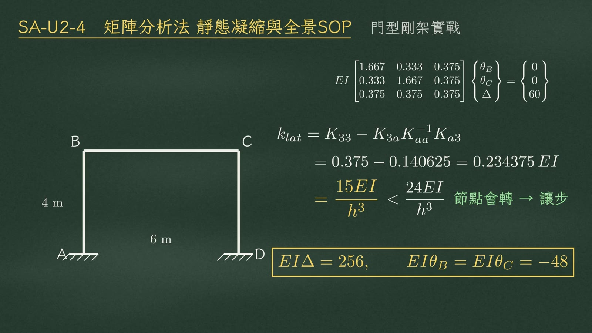
把兩個轉角凝縮掉，直接得到側向勁度：
$$\begin{aligned}k_{lat}&=K_{33}-K_{3a}K_{aa}^{-1}K_{a3}\\&=0.375-0.140625=0.234375\,EI\\&=\frac{15EI}{h^3}\;<\;\frac{24EI}{h^3}\end{aligned}$$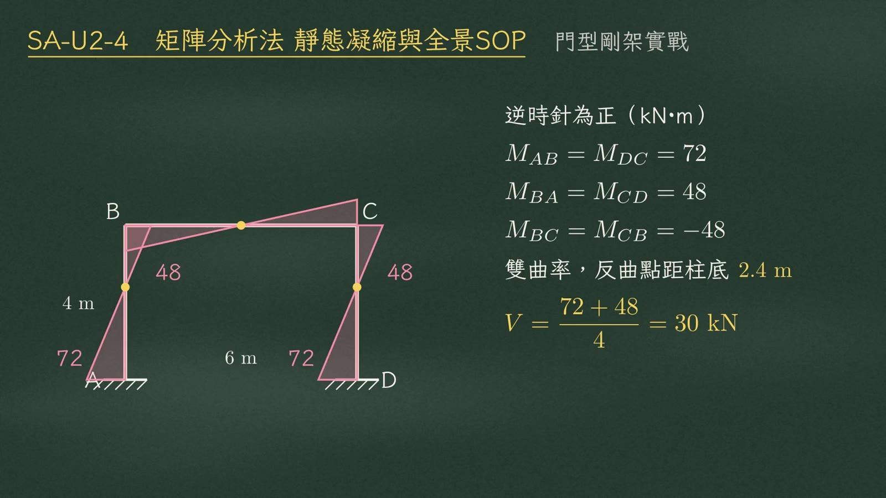
回代桿端彎矩，逆時針為正（kN·m）：
| 位置 | 桿端彎矩 |
|---|---|
| 柱底 | \(M_{AB}=M_{DC}=72\) |
| 柱頂 | \(M_{BA}=M_{CD}=48\) |
| 梁端 | \(M_{BC}=M_{CB}=-48\) |
柱兩端同號，代表雙曲率，反曲點距柱底 2.4 m。柱剪力：
$$V=\frac{72+48}{4}=30\ \text{kN}$$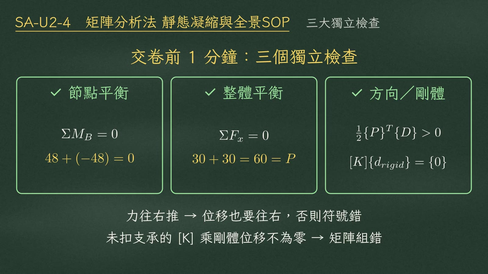
交卷前花一分鐘，做三個不依賴矩陣過程的獨立檢查。
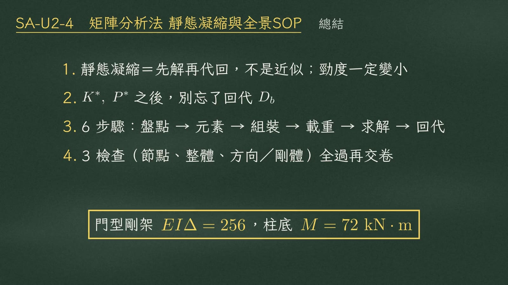
video/SA-U2-4-U5.mp4（黑板畫面截圖）、video/segments.py（逐字旁白）、video/SA-U2-4-U5.srt（時間軸）。例題數值已與 video/HANDOFF.md 核對。門型剛架側向勁度依影片勘誤為 \(15EI/h^3\)。